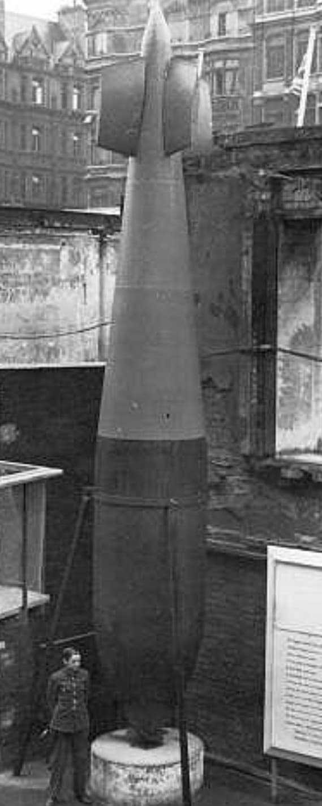

La Grand Slamsuper-bombe britannique conçue par l’ingénieur Barnes Wallis pour le RAF Bomber Command durant la Seconde Guerre mondiale. Avec un poids d’environ 10 tonnes, elle est pensée pour détruire des structures massives par effet sismique plutôt que par simple explosion de surface. Elle représente l’aboutissement de la logique des bombes Tallboy et des armes de pénétration à haute énergie.
La Grand Slam est une bombe de très grande taille, spécialement étudiée pour frapper des cibles durcies :
Comme la Tallboy, la Grand Slam est conçue pour pénétrer le sol ou le béton avant d’exploser, créant un effet sismique qui détruit les structures par effondrement plutôt que par simple souffle.

La Grand Slam est conçue par Barnes Wallis, déjà connu pour la bombe rebondissante utilisée lors de l’opération Chastise contre les barrages allemands. Wallis développe l’idée que, pour détruire des cibles très durcies (ponts, bunkers, viaducs), il faut :
La Grand Slam est l’aboutissement de cette logique : une bombe extrêmement lourde, lâchée de très haut, qui agit comme un marteau sismique.
La Grand Slam est utilisée dans des missions ciblant des objectifs stratégiques majeurs :
Elle est principalement larguée par des Avro Lancaster modifiés, capables de porter cette charge exceptionnelle. Chaque mission Grand Slam est une opération lourde, préparée avec soin, visant une cible unique mais décisive.
La Grand Slam s’inscrit dans la continuité de la Tallboy, autre bombe lourde conçue par Barnes Wallis. Là où la Tallboy pèse environ 12 000 lb, la Grand Slam pousse le concept plus loin avec 22 000 lb :
Les deux armes partagent la même philosophie : frapper peu de cibles, mais les frapper de manière définitive.
Les images de Grand Slam montrent généralement :
La Grand Slam est souvent présentée comme l’une des plus puissantes bombes conventionnelles de la guerre, symbole de la recherche britannique sur les armes de pénétration.
La Grand Slam est une super-bombe britannique conçue par Barnes Wallis pour détruire des cibles durcies par effet sismique. Larguée depuis des bombardiers Avro Lancaster modifiés, elle incarne la stratégie du RAF consistant à frapper des objectifs stratégiques majeurs avec des armes extrêmement spécialisées. Elle s’inscrit dans la même famille que la Tallboy, mais en représente la version la plus massive et la plus spectaculaire.